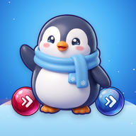

다같이 미끄럼 · Slide Mates
한 번 밀면 다 같이 미끄러지는 얼음 퍼즐 · One swipe, everyone slides!
지원
게임을 하다 궁금한 점이나 문제가 있으면 메일로 알려 주세요.
mycrewdeveloper@gmail.com
- 기기를 바꿔도 이어서 하기: 설정 → 계정에서 Google 또는 Apple로 로그인하면 기록이 계정에 저장돼요. 게스트 기록은 그 기기에만 있어요.
- 판이 안 풀릴 때: 힌트를 누르면 다음 수를 알려 줘요. 판마다 첫 힌트는 무료예요. 같은 판에서 두 번 실패하면 건너뛸 수도 있어요.
- 잘못 움직였을 때: 되돌리기는 몇 번이든 쓸 수 있어요. 구멍에 빠져도 되돌리기로 바로 돌아와요.
Support
Questions or problems? Email us at mycrewdeveloper@gmail.com
- Keep your progress on a new device: sign in with Google or Apple in Settings → Account to save your progress to your account. Guest progress stays on that device only.
- Stuck on a level? Tap Hint to see the next move. The first hint on each level is free, and after two failed tries on the same level you can skip it.
- Made a wrong move? Undo as many times as you like, even after falling into a hole.
계정 삭제 · Delete your account
지워지는 데이터: 로그인 정보(계정 ID·이메일·표시 이름)와 클라우드에 저장된 게임 기록 전부. 삭제한 뒤 따로 보관하는 데이터는 없어요.
What is deleted: your sign-in data (account ID, email, display name) and all game progress saved in the cloud. Nothing is kept after deletion.
앱의 설정 → 계정(또는 홈 화면 왼쪽 위 프로필) → 계정 삭제를 누르면 계정과 클라우드에 저장된 게임 기록이 바로 지워져요. 앱을 쓸 수 없다면 로그인한 계정의 이메일을 적어 mycrewdeveloper@gmail.com으로 삭제를 요청해 주세요.
In the app, go to Settings → Account (or the profile at the top left of the home screen) → Delete account to remove your account and cloud progress right away. If you can't use the app, email mycrewdeveloper@gmail.com with the email address of your signed-in account to request deletion.